AI Academy · Level 3 · Grade 8 · Week 10 · Student lesson
Image Generation Models
Learn to understand, design, build, test and explain AI systems responsibly.
Project: Verified Study Buddy
Before you start
Week 1: generated content is not an observation of an event.
Plan time to read, investigate and explain. Keep predictions separate from observations.
Student lesson · 1 of 16
Your mission
Your learning target
I can explain the mechanism and terminology of image generation and provenance.
I can apply the stated procedure to a new case with a traceable result.
I can identify an assumption or limitation and design a revealing follow-up.
Remember before reading
Close your notes first. A rough first answer helps us choose the right starting point; it is not a score for your ability.
Without opening the old lesson, explain one key idea from Prompt Evaluation. Give an example and a mistake that the idea helps you avoid.
Without opening the old lesson, explain one key idea from Iterative Prompting. Give an example and a mistake that the idea helps you avoid.
Without opening the old lesson, explain one key idea from Sampling and Variability. Give an example and a mistake that the idea helps you avoid.
After trying, check the relevant lesson or ask your teacher. Change the part of your explanation that the evidence shows was wrong.
Week 10: Image Generation Models
Image generation iteratively constructs pixels guided by learned representations.
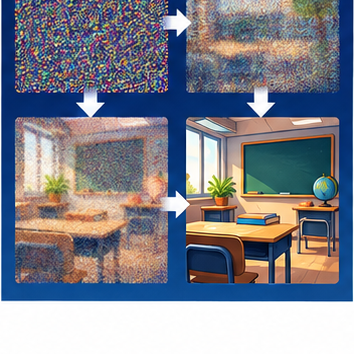
CREATOR MISSION
Sequence a simplified noise-to-image card model.
Creator name and date:
Readiness for the connected explanation
Recall Generation failures and verification. Explain why a recorded result needs its input conditions and evidence source before it can support a claim.
This week’s end goal
By the end, I can describe a toy denoising process and distinguish generated illustrations from observations.
Student lesson · 2 of 16
Notice the evidence
PICTURE STORY
Notice → Predict → Explain
Begin with visible evidence. Do not explain more than the picture and information support.
MYSTERY
The learners must use image generation models to solve a problem. What information do they have? What decision or calculation do they make? What would count as evidence that it worked?
Three observations (what you can point to):
My prediction and the clue supporting it:
A closer explanation
An image generator constructs an output from learned patterns and a specification. A generated picture is not a record that the depicted event occurred.
Begin by writing the question the procedure is intended to answer. Identify the information already supplied, the information it will produce and the information still missing. These are constructed classroom examples; they do not require live accounts, private records or an external service. Do not treat a plausible explanation as a measured outcome.
Student lesson · 3 of 16
See how it works
VISUAL MECHANISM
Input → Process → Output
Trace the information. At each stage, ask what changed and how you could test it.
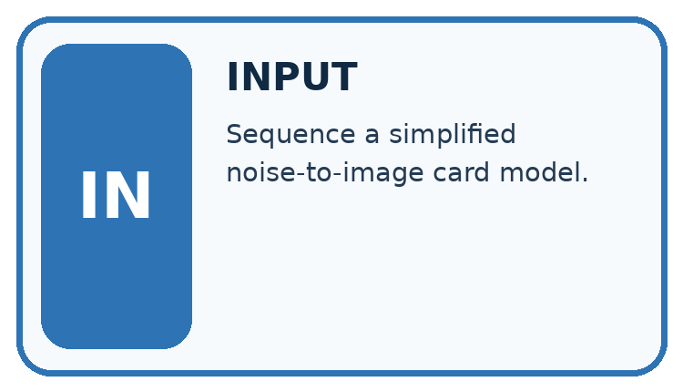
↓
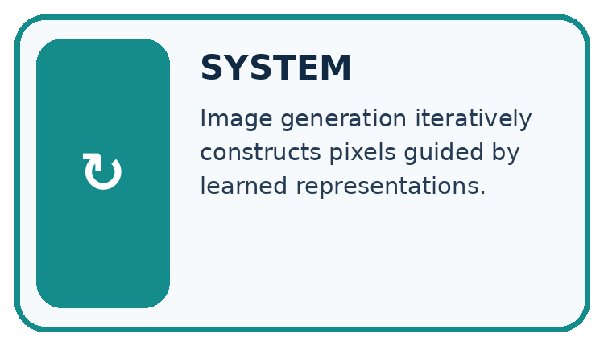
↓
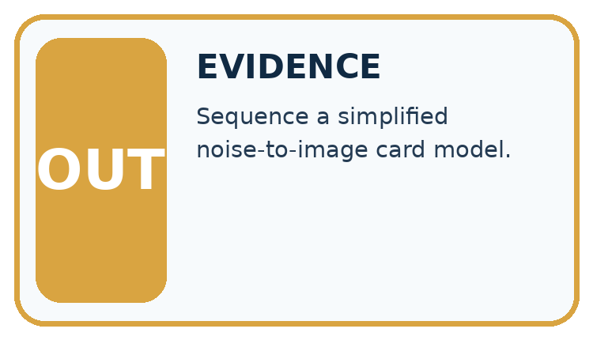
Which stage could fail even when the other two are correct? Explain:
A closer explanation
Keep a provenance record containing specification, tool/version when known, generation date, edits, permissions and intended use. Label fictional imagery. Inspect visual requirements and avoid inferring identity or event authenticity from appearance.
Image generation and provenance — evidence trace
Before applying the procedure, write its units, denominator or decision boundary where relevant. A partner should be able to repeat each step using the same inputs. If a required input is absent or violates the stated contract, record that condition explicitly instead of quietly replacing it with a convenient value.
Connect the picture and the explanation
Point to the input, the deciding step and the result in this week’s visual. Explain the same step in ordinary words. A picture helps when you can say what each part represents.
Student lesson · 4 of 16
Compare the cases
CASE GALLERY
Four Tests, Four Kinds of Evidence
A system is not understood until it survives more than one comfortable example.


NORMAL CASE: predict and name evidence. BOUNDARY CASE: predict and name evidence.


MISSING INFORMATION: predict and name evidence. TRANSFER CASE: predict and name evidence.
Which case is most likely to reveal a hidden assumption? Why?
Change one thing in the pictured case
Change: Relabel the illustration as a photograph of an actual laboratory measurement.
Prediction: That caption is unsupported.
Reason: Its provenance is an invented diagram of a process, not a camera record of an event.
Student lesson · 5 of 16
Words that unlock the idea
VOCABULARY LAB
Words You Can Use to Reason
A definition matters when you can recognize the idea, use it, and contrast it with a near-miss.
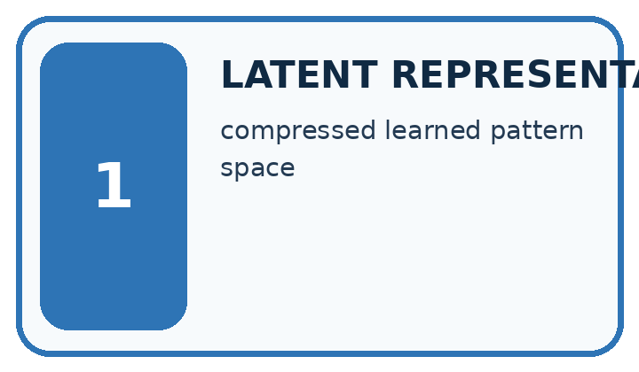
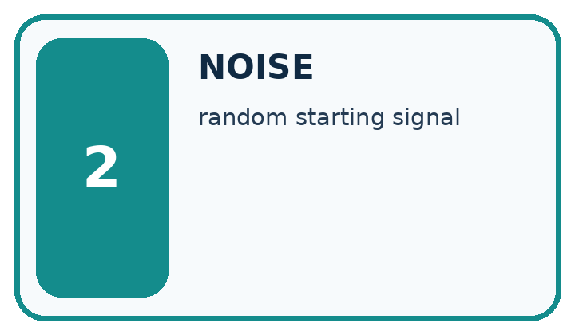
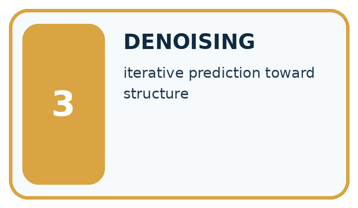
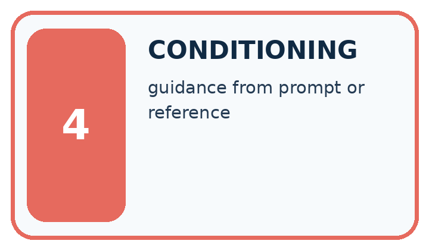
| Word | My own example | Not this / boundary |
|---|---|---|
| latent representation | An internal representation learned or constructed by a model rather than directly supplied as the original observation. | |
| noise | Variation or interference that obscures the information relevant to a task. | |
| denoising | Reducing noise in a representation; some generative models learn repeated denoising steps to create outputs. | |
| conditioning | Making a model's output depend on supplied information, such as a prompt or image. |
Words used in the closer explanation
| Word | Meaning |
|---|---|
| Provenance | Recorded origin and transformation history |
| Visual criterion | A stated requirement checked against an image |
| Authenticity claim | A claim about the source or reality of depicted content |
Student lesson · 6 of 16
Follow a worked example
WORKED EVIDENCE
Reason Step by Step
Predict first. Then check each step. A correct answer without visible reasoning is incomplete evidence.
Worked evidence for Image Generation Models
1. In this simplified diffusion-style image generator, begin with random visual noise. Other image-generation methods use different procedures.
2. At each step, predict a slightly more structured image guided by the prompt.
3. Learned patterns influence shapes, textures, and relationships.
4. The result is generated, not retrieved evidence of a real event.
Recalculate, retrace, or restate the reasoning in your own representation:
CHECK Did the evidence answer the exact question? Did the total, path, or source record stay consistent?
A closer explanation
A fictional poster requires exactly three labelled circles. Generated image shows four circles and one unreadable label. A caption calls it a photograph of a real lesson.
It fails count and label criteria; the photograph claim is unsupported. Record it as a generated fictional illustration and revise or reject before use.
Compare the intermediate evidence with the final statement. Explain why each number or decision follows from the stated inputs. The conclusion belongs to this scenario and procedure; changing the inputs, evaluation population or authority can change what it establishes. Retain the raw record so a later revision can be compared honestly.
Learn from the worked case
Cover the result before checking it. Say what is given, choose the procedure, and follow one step at a time. Then uncover the result and explain your first mismatch. Ask why a step is allowed, not only what number it produces.
A pictorial worked case: Image Generation Models
A fictional lesson poster illustrates one family of image-generation approaches.
The facts we will use
Toy 2×2 noisy numerical grid: [[0.2,0.8],[0.6,0.3]]. A specified illustrative denoising step gives [[0.1,0.9],[0.4,0.2]].
These supplied arrays illustrate steps only; they are not outputs from a real trained diffusion model.
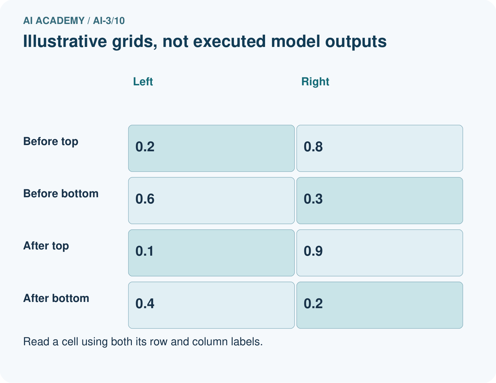
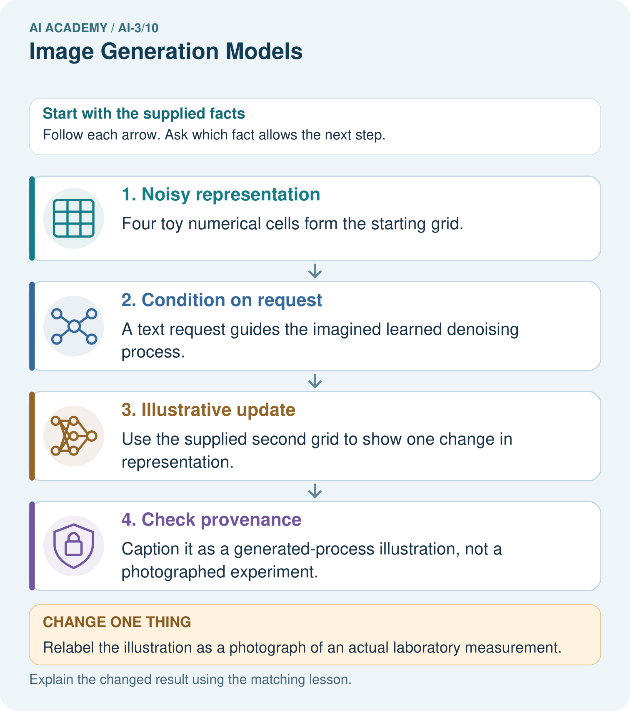
Read the picture one step at a time
Why this result follows
Diffusion-style generators learn to remove noise in stages, often guided by text, but a real implementation can operate in a latent representation rather than direct pixels. The toy values let us inspect an update without pretending to simulate that trained process. An attractive final image still needs checks for labels, requested relations and factual claims.
What this example does not establish
Not all image generators use diffusion; this toy step is neither a complete algorithm nor an executed model.
Read the labelled picture: What may these two grids explain, and what can they not establish about a real generator?
Change one thing: Relabel the illustration as a photograph of an actual laboratory measurement. Predict the result before checking the explanation. What remains the same?
Student lesson · 7 of 16
Find and repair a mistake
ERROR DETECTIVE
Compare → Diagnose → Repair
Do not patch the answer. Find the earliest unsupported assumption, wrong step, or weak evidence.
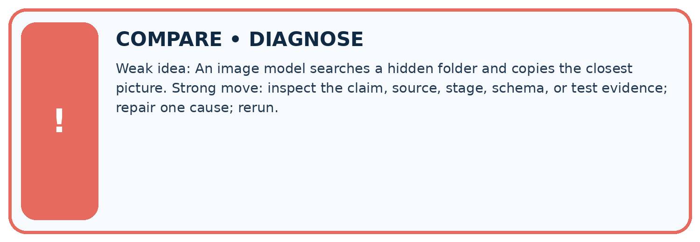
| Evidence record | Expected | Actual | Likely cause / next test |
|---|---|---|---|
| normal case | works | ||
| boundary case | stated rule | ||
| missing input | safe response | ||
| fresh transfer | generalizes |
Repair one cause. Why is this repair better than changing several things?
A closer explanation
Complete the supported workbook tasks before attempting W4 independently. Record any hints or help used. After feedback, use the teacher's fresh retry rather than copying the earlier answer. For a project, select a relevant new case, predict the outcome from the declared rule and preserve the result alongside any revision.
Student lesson · 8 of 16
Practise together
LOGIC STUDIO
Specify Before You Run
Prompts, schemas, retrieval, tool calls, and code are inspectable parts of one AI product.

SET task, audience, constraints, output_schema LOAD approved_context or retrieval_result CALL model or allowed_tool VALIDATE fields, claims, citations, and safety IF evidence missing: ask, retrieve, or abstain RETURN useful output + source trail + limitations
Trace one input. Which line changes the state or chooses a path?
A closer explanation
Provenance tracks production history; it does not prove the content is accurate or establish every legal permission.
A useful check asks what would make the reasoning fail. Distinguish a failure to execute the declared procedure from a weakness in the procedure itself. The first may require a correction; the second requires an explicitly revised method and new evidence. Preserve unsuccessful cases so an improved result cannot hide the original problem.
Practise with less help: Trace the worked case
Use workbook W2 for the connected example “Image generation and provenance”. First fill the input and rule boxes. Try the middle steps before asking for a hint. After a hint, try the next step yourself.
| Plan | Do | Check |
|---|---|---|
| What is given? Which rule or procedure applies? | Record each intermediate step. | Does the result follow? What remains unknown? |
Explain your trace to a partner. Your partner points to one step to check. Swap roles on the next case. Each person writes their own explanation.
Check your reasoning
Use the worked case for Image generation and provenance. Proposed explanation: “The worked result establishes every future case”. Decide whether this explanation is supported. Point to the step or supplied fact that decides; explain your repair if needed.
Answer on your own before discussion. If you are unsure, say which step you need help with.
Explain the picture
What may these two grids explain, and what can they not establish about a real generator?
This is supported practice. Keep the separately named independent case for an attempt before feedback.
Student lesson · 9 of 16
Run the investigation
EVIDENCE LAB
Predict → Test → Record → Explain
Keep expected and actual results separate. Surprises are useful data when recorded honestly.
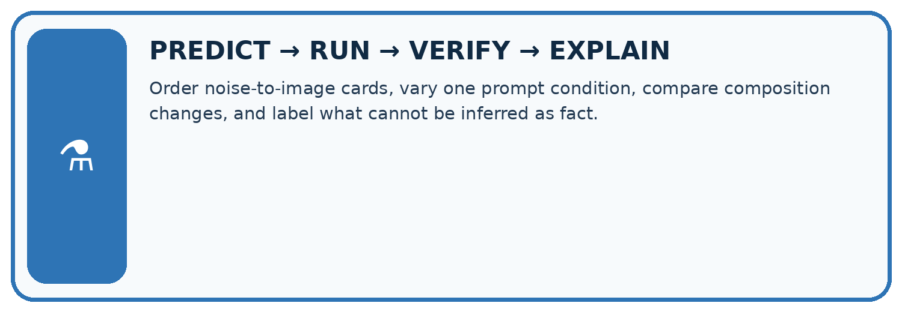
Order noise-to-image cards, vary one prompt condition, compare composition changes, and label what cannot be inferred as fact.
| Test / input | Prediction | Actual | Evidence / calculation | Change or keep? |
|---|---|---|---|---|
| normal | ||||
| boundary | ||||
| missing | ||||
| fresh transfer |
What did the hardest test teach you that the normal test did not?
Plan → try → check
Before trying: what do I expect, and why? While trying: which step could first go wrong? Afterwards: what did I actually observe, and what should change? Keep “not run” if you only traced the procedure.
Student lesson · 10 of 16
Build your understanding
MASTERY
From Knowing the Word to Owning the Idea
Move upward only when you can produce evidence without copying the worked example.

1 • NAME: Define the concept without repeating the textbook.
2 • TRACE: Show the information, state, branch, calculation, or evidence path.
3 • APPLY: Solve a different example independently.
4 • CHALLENGE: Find a boundary case, counterexample, or unfair outcome.
5 • EXPLAIN LIMITS: Say when the result should not be trusted or used alone.
My strongest evidence of independent understanding:
Student lesson · 11 of 16
Connect your project
CUMULATIVE PROJECT
Verified Study Buddy
Every week adds one inspectable piece. The system must show how it reached a result.
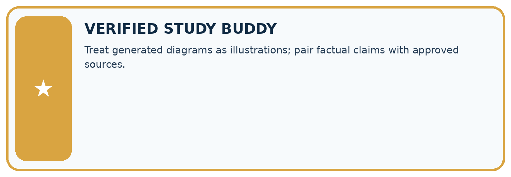
THIS WEEK’S CHECKPOINT Treat generated diagrams as illustrations; pair factual claims with approved sources.
SYSTEM MAP Learner need → prompt/schema → approved sources/retrieval → model/tool → structured answer → verification → human decision
What will you add, change, or verify in the project this week?
What should remain under human control?
RESPONSIBLE DESIGN Collect only necessary information. Show uncertainty and limits. Never confuse fluent output with verified truth.
Evidence for your project
Use Study Buddy generated diagrams only with clear provenance and checked educational labels.
Student lesson · 12 of 16
Show what you know
INDEPENDENT MASTERY PROOF
Explain • Transfer • Test • Defend
Complete this page without copying the worked example. Your reasoning matters more than decoration.
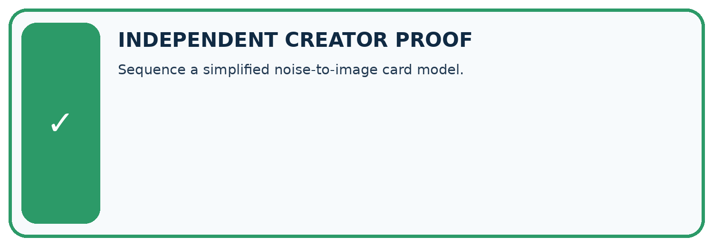
CHALLENGE Sequence a simplified noise-to-image card model.
1. My fresh example, trace, calculation, or design:
2. My evidence that it works (include a boundary or missing-data case):
3. One limitation, fairness concern, or situation needing human review:
SELF-CHECK □ I explained the mechanism □ I used evidence □ I tested a fresh case □ I named a limitation □ I can answer ‘why?’
Student lesson · 13 of 16
Study a complete case
Week 10 Worked case
Use the supplied details to practise the weekly concept before attempting the independent question. This case extends the illustrated lesson.
The situation
A generator creates a realistic fictional bicycle beside a tree.
The question
How does this differ from event photography?
Worked explanation
It synthesises an image from learned patterns and instructions; it does not document that event. Many systems denoise iteratively, but architectures vary.
Explain it in your own words
Which detail supports the answer, and why does it matter?
Trace the supplied case visually
A generated image does not document an event
| Evidence or stage | Value or result |
|---|---|
| Brief | Bicycle beside a tree |
| Model | Synthesises visual patterns |
| Image | Fictional scene |
| Check | Content and intended use |
A generator creates a realistic fictional bicycle beside a tree.
How does this differ from event photography?
It synthesises an image from learned patterns and instructions; it does not document that event. Many systems denoise iteratively, but architectures vary.
Student lesson · 14 of 16
Try a new case independently
Independent case: Apply a new case independently
A generated diagram requires two arrows and labels input/output. It has two arrows but swapped labels. Metadata records generation, yet the caption says experimental observation. Audit.
Attempt this case before feedback. Record any help. Earlier examples below are further practice; a case already practised with feedback cannot establish fresh transfer.
Week 10 Independent application
Close the worked explanation. Apply the idea to this different question without copying.
An image model draws a plant with seven roots after a request for exactly four. What does this show, and where should an exact count diagram be made?
My answer, with a trace, calculation or supporting evidence
Create and test
Change one relevant detail. Predict the result before testing. Include a boundary or missing-information case when it helps reveal a limit.
My changed input and expected result
Connect to your project
Treat generated diagrams as illustrations; pair factual claims with approved sources.
The evidence I will keep
Your teacher has the independent answer and scoring criteria. Complete the matching workbook week to keep your practice evidence together.
Transfer practice from the original programme
An image generator produces a convincing picture of a school greenhouse on Mars. A student calls it photographic evidence. Explain what the image can and cannot establish.
Use feedback to improve
Attempt the independent case before hints. Record whether you worked alone, used a hint or followed a model. After feedback, fix the first unsupported step and explain why it changed. A later check uses a changed case, not a copied answer.
Student lesson · 15 of 16
Your lesson route
Start with this question: A fictional lesson poster illustrates one family of image-generation approaches.
| By the end, I can | How I will show it |
|---|---|
| Explain the mechanism and terminology of image generation and provenance | Explain the deciding step, show a trace or test, and state one limit. |
| Apply the stated procedure to a new case with a traceable result | Explain the deciding step, show a trace or test, and state one limit. |
| Identify an assumption or limitation and design a revealing follow-up | Explain the deciding step, show a trace or test, and state one limit. |
Remember → watch and explain → try with help → investigate → try independently → keep project evidence. Your teacher may spread this lesson across several classes.
Keep your first prediction. Compare it with what the evidence shows and explain any change.
Student lesson · 16 of 16
Finish and return
Close your notes. Explain this goal in your own words: Explain the mechanism and terminology of image generation and provenance
If you are unsure, return to the worked picture and explain one arrow. If you are ready, change an input or assumption and justify your prediction.
Save your workbook evidence. At the next review, try a different case before opening your old answer.